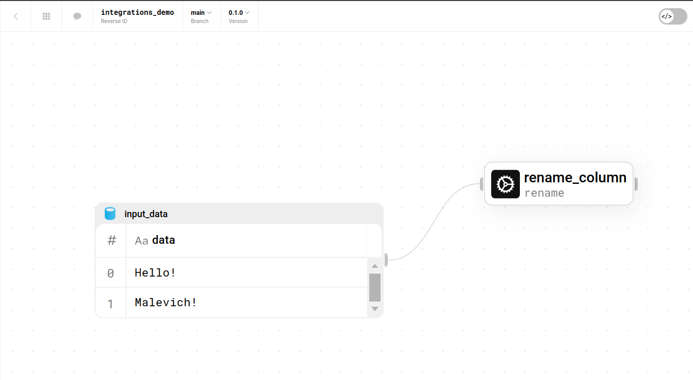

Integrations#
You can integrate Space flows into your developing process!
Installation example#
Assume, you have the following flow:
{kind=link}
With the following command you can install it into your malevich package:
malevich space flow install "integrations_demo"
And import it from my_flows module as a function and run it!
from malevich import table
from malevich.my_flows import integrations_demo
res = integrations_demo(
version='0.1.0',
input_data=table({'data': ['Malevich!', 'Bye!']})
)
for r in res:
print(r.get_df())
Result:
$ python draft.py
result
0 Malevich!
1 Bye!
Versioning#
If option
deployment-idwas provided, command will install the flow version from the deployment.If option
branchwas provided, command will install the active version from branch provided.Otherwise, command will install active version of active branch.
You can install different flow versions.
Deinstallation#
In order to remove integration, use the following command:
malevich space flow delete "integrations_demo" -v < VERSION >
If you want to delete all integration versions:
malevich space flow delete "integrations_demo" -a
For example:
$ malevich space flow delete "integrations_demo" -v 0.1.0
version 0.1.0 of integrations_demo was successfully deleted.
Command Descriptions#
$ malevich space flow install --help
Usage: malevich space flow install [OPTIONS] REVERSE_ID
Install flow to my flows
╭─ Arguments ─────────────────────────────────────────────────────────────────────────────────────────╮
│ * reverse_id TEXT Space Flow Reverse ID [required] │
╰─────────────────────────────────────────────────────────────────────────────────────────────────────╯
╭─ Options ────────────────────────────────────────────────────────────────────────────────────────────╮
│ --deployment-id -d TEXT Flow Deployment ID. If not set, will take flow from active version │
│ --branch -b TEXT Flow branch. If not specified, will take the active one. │
│ --attach_any -a Attach to any flow deployment │
│ --help Show this message and exit. │
╰──────────────────────────────────────────────────────────────────────────────────────────────────────╯
$ malevich space flow delete --help
Usage: malevich space flow delete [OPTIONS] REVERSE_ID
Delete flow integration.
╭─ Arguments ────────────────────────────────────────────────────╮
│ * reverse_id TEXT Space Flow Reverse ID [required] │
╰────────────────────────────────────────────────────────────────╯
╭─ Options ──────────────────────────────────────────────────────╮
│ --version -v TEXT Version to delete. │
│ --all-versions -a Delete all versions of the flow. │
│ --help Show this message and exit. │
╰────────────────────────────────────────────────────────────────╯